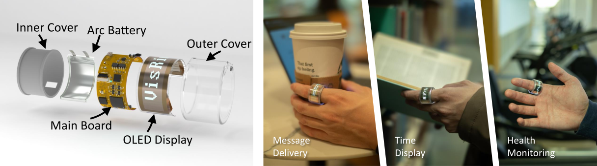

VisRing: A Display-Extended Smartring for Nano Visualizations
VisRing: A Display-Extended Smartring for Nano Visualizations

(opens in new tab)*contributed equally
Venue. ACM Symp. User Interface Software and Technology (2025)
Abstract. We introduce VisRing, the first smartring incorporating a bendable 160 x 32 4-bit grayscale organic light-emitting diode display. VisRing stands out by displaying nano visualizations while maintaining a compact design and minimal weight of 6.6 g, with an overall cost of around $35. We exploit opportunities for a system-on-a-chip architecture to tightly integrate an inertial measurement unit, a photoplethysmograph sensor, a temperature sensor, Bluetooth, a microcontroller, and a display unit that spans 270° to 360° , depending on finger size. Our contributions include the hardware design and implementation of VisRing, along with a software library that supports visualizing various data types. A qualitative study with 12 participants demonstrated the comfort, likability, and social acceptance of VisRing's hardware and software. The participants liked the visualizations and found the ring lightweight, but also pointed out possible improvements. All materials are shared under an open-source license to enable the community to extend and improve VisRing.
This publication is open access
Materials.
DOI(opens in new tab)
link(opens in new tab)
link(opens in new tab)
PDF(opens in new tab)
How to cite.
Link to this page: